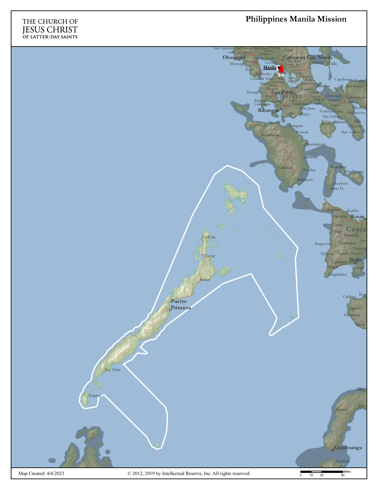

🌏 About the Philippines
The Philippines is a beautiful island nation in Southeast Asia made up of over 7,000 islands. It’s known for its rich culture, friendly people, amazing food, and strong Christian values.
🗣 Language
I’ll be learning and speaking Tagalog, one of the official languages of the Philippines.
🏙 Major Cities in My Mission
- Manila (capital)
- Puetrto Princesa
- Roxas
- Rio Tuba
- El Nido
🗺️ Mission Boundaries (Approximate)
The Philippines Manila Mission covers parts of Metro Manila and nearby provinces. It’s one of the most populous and exciting missions in the Philippines!
